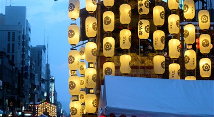
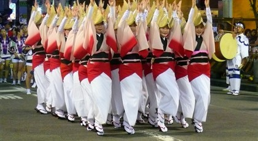

Event Activities
-
PARADES AND FLOATS

Many Japanese festivals are centered around portable shrines, decorated floats, and neighborhood teams. These are good events for photos, local history, and seeing the community side of Japan.
-
FOOD AND MARKET STALLS

Food stands are part of the fun at festivals and international events. Look for festival snacks, regional specialties, street food, drinks, and limited-time menus around the event area.
-
MUSIC AND DANCE

From Awa Odori dance groups to international music stages, performances help each event feel alive. Check the schedule early because headline performances can draw big crowds.
-
ART AND EXHIBITIONS

Tokyo and other large cities often host fashion, design, and art exhibitions alongside festival seasons. They are calmer options when you want culture without a full outdoor crowd.